Project 1 aligned images by translation only. Here we recover the full projective relationship between overlapping photographs: estimate the homography between them, warp them into a common frame, and feather them into a seamless mosaic — first from hand-clicked correspondences (Part A), then fully automatically with Harris corners, MOPS descriptors and RANSAC (Part B).
A homography has 8 degrees of freedom, so each point correspondence
(x,y)→(x',y') contributes two linear equations:
x' (h31 x + h32 y + 1) = h11 x + h12 y + h13 y' (h31 x + h32 y + 1) = h21 x + h22 y + h23
Stacking ≥4 correspondences gives an over-determined system
A h = b in the 8 unknowns (h33 fixed to 1), solved by least squares
(np.linalg.lstsq). More points don't break it — they stabilise the
fit. A homography recovered from 12 hand-clicked château points:
H (image 1 → image 2) = 0.9515 9.7484e-03 -223.7737 -0.0264 0.9711 -30.4371 -1.4792e-04 4.5223e-05 1.0000
The core is validated on synthetic data independent of any image (like
Project 1's test_align.py): build a random H, apply it to random
points, recover it, and compare.
| Synthetic test | error |
|---|---|
| Recover known H (4–11 points, 200 trials) | 8.9e-07 |
| Over-determined recovery (50 points) | 8.1e-11 |
| Warp → unwarp point round-trip (H then H⁻¹) | 1.4e-13 |
Warping is done by inverse mapping: for every output pixel, map back through H⁻¹ into the source and sample there (forward warping scatters pixels and leaves holes). Nearest-neighbour just rounds; bilinear blends the four surrounding pixels — smoother, and about 2.3× slower here (115 ms vs 264 ms).
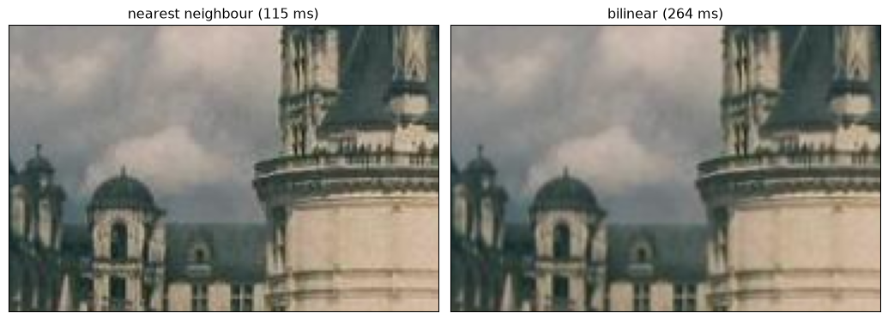
| Warp sampler test | error |
|---|---|
| Identity is a no-op | 0.0e+00 |
| Translation shifts & samples correctly | 0.0e+00 |
| Bilinear exact on a linear ramp under affine warp | 1.4e-14 |
Rectification is the whole pipeline on one image: take a plane shot at an angle, declare its four corners to be a true rectangle, and warp. The plane comes out fronto-parallel. Left: the photo with the chosen quad; right: rectified.
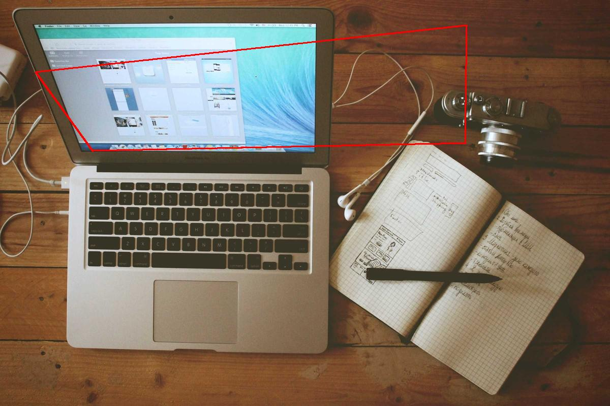
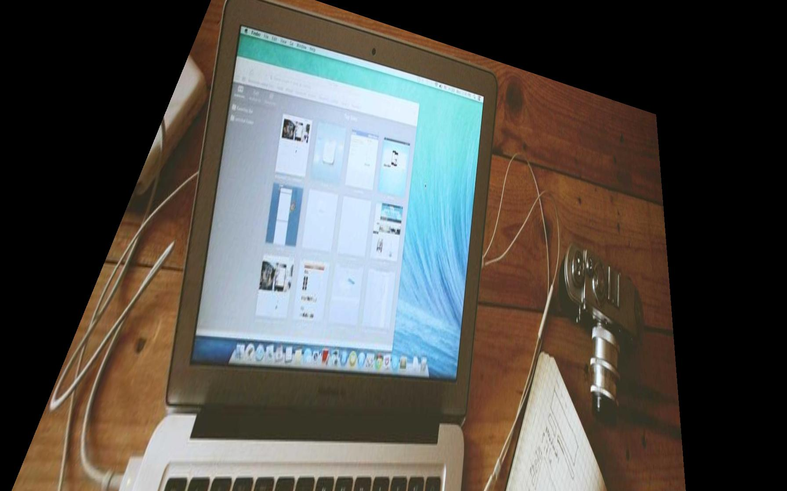
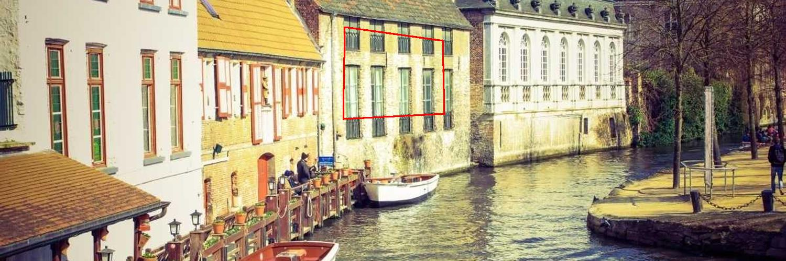
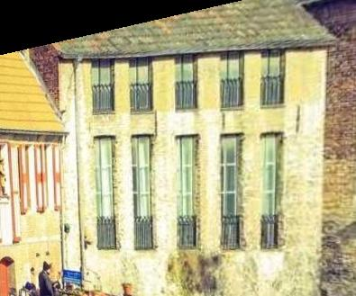
Each set is three views taken across a pivot. Homographies from the hand-clicked points map the outer views into the middle view's frame; images are warped into a shared canvas and blended by feathering — a weight that ramps to zero at each photo's edge, so overlaps cross-fade instead of showing a hard seam.
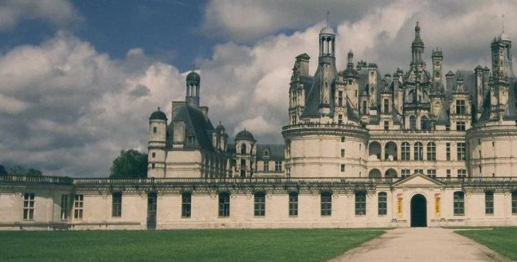
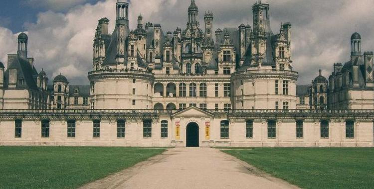
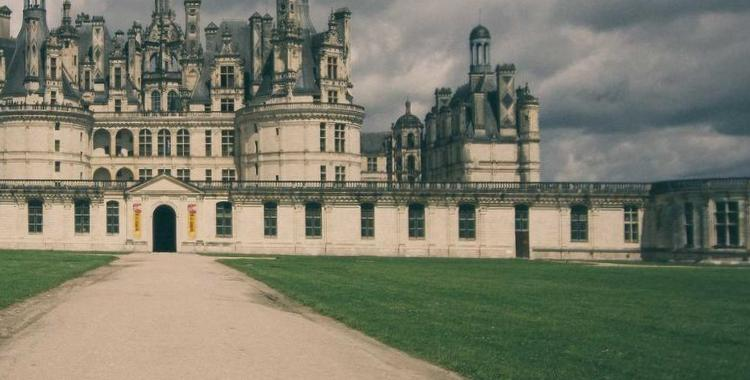
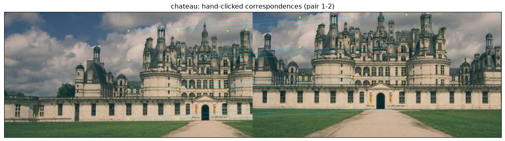
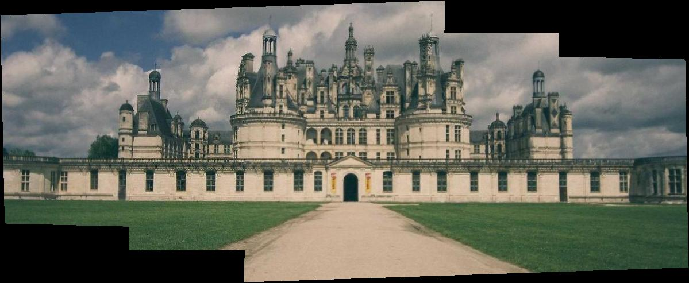
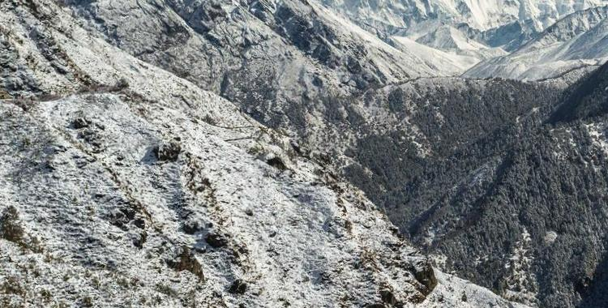
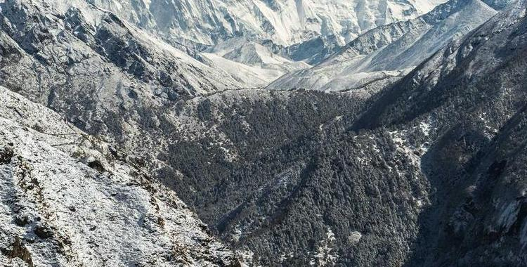
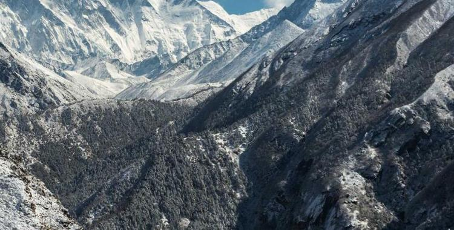
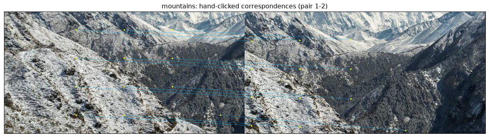
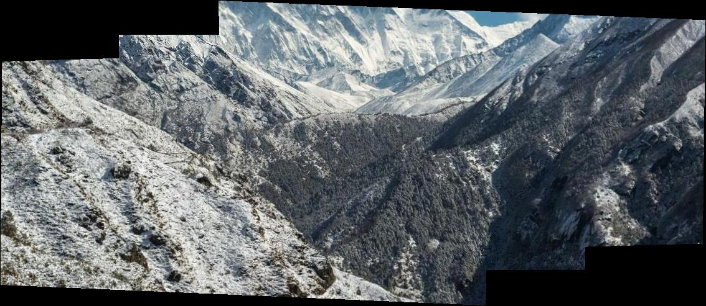
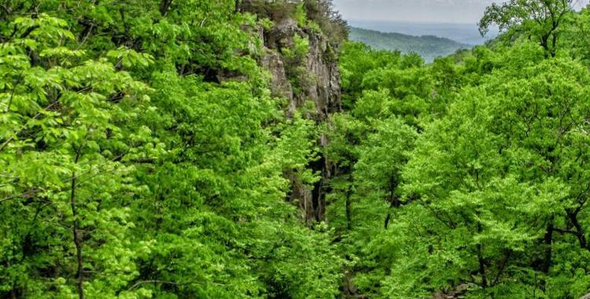
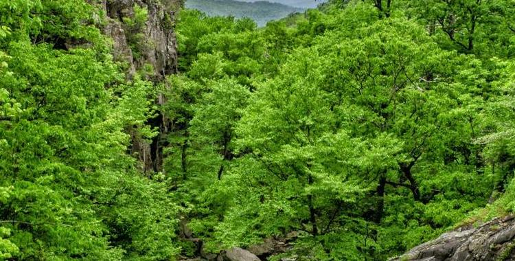
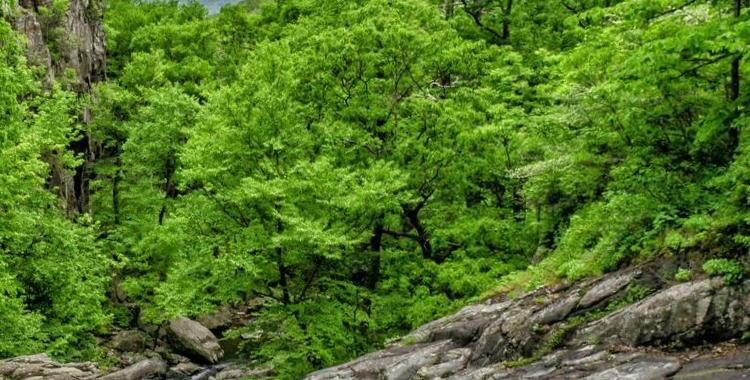
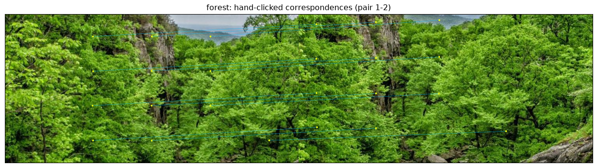
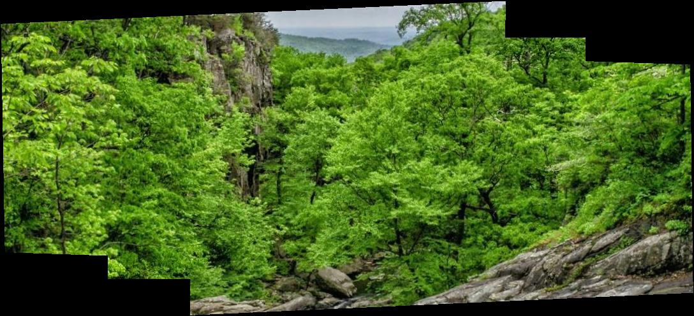
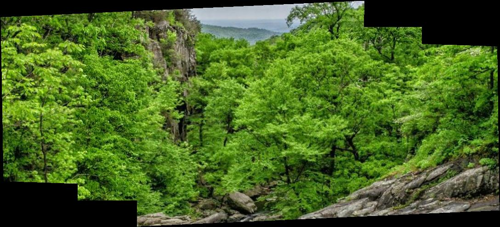
Same warp and blend as Part A — the only change is that correspondences are found automatically, following the MOPS paper (Brown, Szeliski & Winder).
Harris (from the provided harris.py) returns thousands of corners
clustered in texture. Adaptive Non-Maximal Suppression keeps 500 that are
both strong and spread out: each corner is scored by the distance to the nearest
significantly-stronger corner, and the largest such radii win.
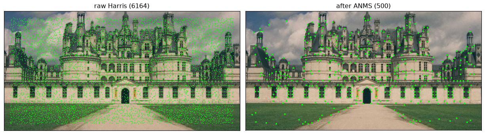
Around each corner a 40×40 window is low-pass filtered and sampled down to an 8×8 patch, then normalised to zero mean / unit variance (invariant to brightness and contrast).
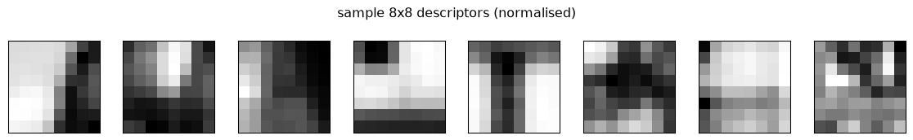
Descriptors are matched by nearest neighbour, kept only when the best distance clearly beats the second-best. This alone removes most bad matches in repetitive texture before RANSAC runs.
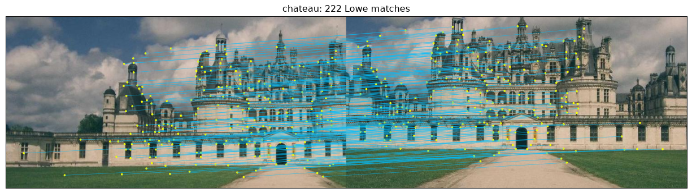
4-point RANSAC repeatedly fits H from a random minimal sample and counts inliers within a pixel threshold, keeping the most-agreed model and refitting on all its inliers — immune to the remaining outliers.
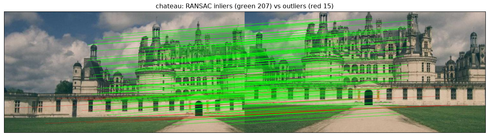
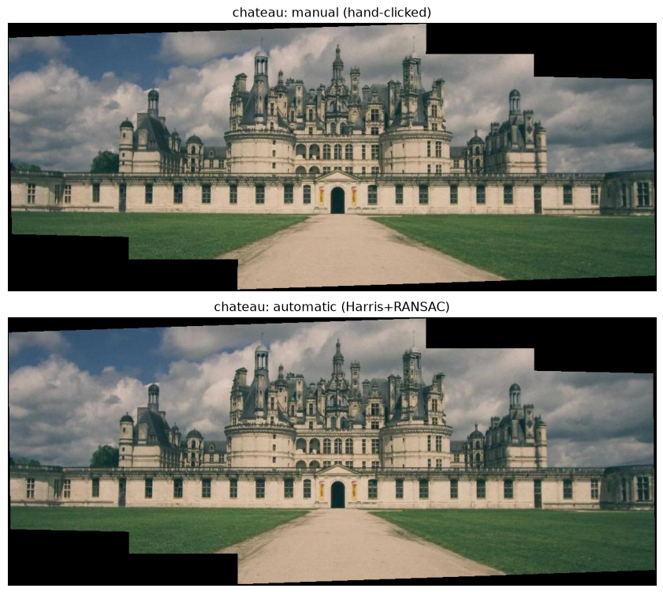
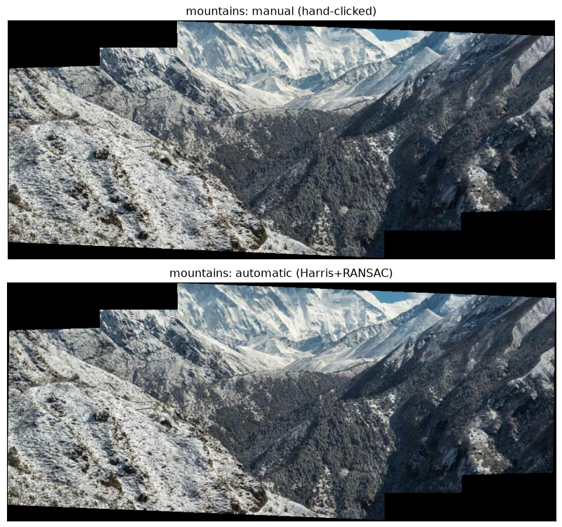
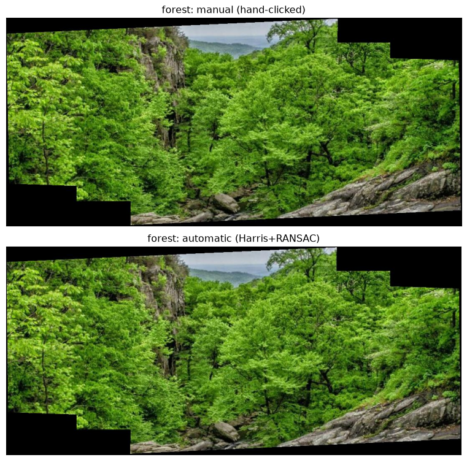
Because the ground-truth homography is known, both the manually- and automatically-recovered H can be measured against it. The errors below are the max absolute entry difference (H normalised to H₃₃=1); they sit on the translation terms of magnitude in the hundreds, i.e. sub-pixel.
| Set | raw corners | matches | inliers | manual H err | auto H err |
|---|---|---|---|---|---|
| Chateau de Chambord | 6164 | 222 | 207 | 0.434 | 0.549 |
| Himalaya | 7206 | 182 | 182 | 0.163 | 0.140 |
| Forest valley | 7968 | 209 | 209 | 0.157 | 0.042 |
Full pipeline runtime: 48.2s. Everything on this page
is regenerated by python run_all.py && python make_writeup.py.
Own .venv; correspondences saved to JSON so results are
reproducible without re-clicking; the geometry (computeH, inverse
warp) implemented from scratch — no cv2.findHomography,
warpPerspective, or skimage.transform.warp; and every
number here is read from the code's own output rather than typed in by hand.